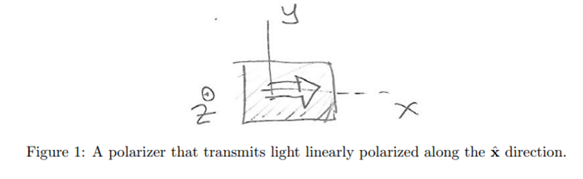
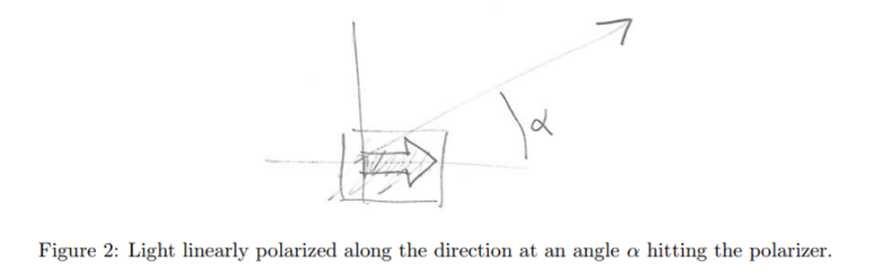

All of us have attended classes after classes solving boring mathematical quadratic equations, learning exceptions in inorganic chemistry or constructing that free-body diagram of complex physics problems (all of this while preparing for JEE Advanced, as in my case). But going through these, all of us have felt frustrated at some point and asked, "Oh, When am I going to use the knowledge that the ratio of the circumference of a circle to its diameter is a fixed number pie? or how a body falls in an idealized situation of zero air resistance and uniform gravity?" As a person pursuing research in theoretical physics, a much more abstract subject, this article would answer why we care about studies in general and why we spend hours solving endless mathematical equations in theoretical physics.
Whenever I encounter a physical problem, what I do is I divide it into two parts: an exciting story and a supporting mathematical framework. We have beautiful stories explaining how theories are applied physically, and we have a mathematical framework that matches that story with values that come from experiments. But often in our classrooms, the instructor gets so lost in the boring maths that the story loses its essence, and the subject gets boring.
Let's take a couple of examples here.
Take different models of the structure of atoms. Sitting in the class, no one has seen, looking from a microscope, how is the distribution of electrons in an atom or how dense the nucleus is. But the question is important," What are we made of ? What is the most fundamental particle of life?". Having discovered electrons and protons, the most straightforward model would be to create a plum pudding out of them to achieve charge neutrality (because that's what we all are). Rutherford comes along and says that he has shot alpha particles on thin gold foil atoms. While most of them go undeflected, some reflect at sharp angles. If the atom had a uniform pudding of charges, deflections would have been consistent. This means most of the atom must be empty, and the mass must be concentrated in what came to be known as the nucleus. Logically, as alpha particles are positively charged, their deflection means the nucleus must be positively charged too and thus, electrons must revolve around it. But along with it comes the problem that electrons must spiral into the nucleus due to coulombic attraction. Therefore, we say electrons have levels with discrete energy and discrete angular momentum, resulting in Bohr's model of the atom.
All of this would be familiar, and I don't want to bore you with more. Still, the question's relevance motivates you to build a story to explain observations related to the most basic building blocks of all matter. And then comes the mathematics involving Rydberg's constant, Bohr's Postulates, and all the underlying formalism, which is also essential, but the question's relevance is critical.
But that is almost too obvious; physics is relevant, so we should study it. But relevance is one part, and a story is another. We all consume pieces of fiction like those fairy tale novels or the exciting adventures of Sherlock Holmes. Still, we never ask questions, like when will I use this knowledge of wonderland or how Sherlock solved all those cases. This is because we care for the story and its characters. Fiction gives us a space to dive into, where we have adventures to explore purely based on our interests and will. And theoretical physics is just about that story too. Quoting Stephen Hawking: "Real science can be far stranger than science fiction and much more satisfying."
In this context, let's discuss our second example, possibly the most confusing physical phenomenon with probably no correct interpretation, "Quantum Mechanics", with a short story.[2]
We all know light is an electromagnetic wave. Its electric field component wiggles periodically in a particular direction called its polarization. We also have a polarizer, a device that allows light polarised in one specific direction to pass through. Consider a polarizer whose preferential direction is aligned along the x direction, as shown in Figure 1. Light that is linearly polarized along the x direction goes through the polarizer; however, if the incident light polarization is orthogonal to the x direction, that is, along the y direction, it will be totally absorbed by the polarizer.
Now consider a light with polarization forming an angle α with the x-axis (as shown in Figure 2) because that is when things get interesting. When this electric field hits the polarizer, the component along xˆ goes through, and the component along yˆ is absorbed. You may recall that the energy in an electromagnetic wave is proportional to the square of the magnitude of the electric field. This means that only a fraction of the beam's energy goes through.
But now, let us understand what this means for the individual photons that make up the incident beam. The premise here is that all photons in the incident beam are identical, and a photon is the most fundamental quanta of light. But now we run into a problem. As we know, only a fraction of the beam's energy passes through, and photons form the beam's energy; why do some of the photons pass through the polarizer and others don't? One answer could be that the photon divides into two photons with proportionate energies. However, if a fraction of a photon went through with a lower energy, we would measure a lower frequency, which is something that does not happen.
Something weird is happening here. Do the photons magically disappear in thin air, or were they not there in the first place? This story disturbed scientists for a long time and you could take your time to think about it, but this led to the invention of quantum mechanics.
There are two possible escape routes. Perhaps the polarizer is not actually a uniform structure, and depending on precisely where the photon is, it either passes through or is absorbed. Experiments reveal that this is untrue. Einstein and others presented a more intriguing possibility. They asserted that the existence of hidden variables offered a potential solution. The photons, looking supposedly similar, would possess further undiscovered hidden characteristics that would decide with it, if known with certainty, which photons pass through and which ones are absorbed. John Bell and others' work made it possible for clever experiments designed by physicists to disprove most hidden variable theories.
The answer in quantum mechanics is that there is indeed a loss of determinism. No one can predict whether a photon will go through or get absorbed. The best anyone can do is to predict probabilities. The probability is that if we shoot 1000 photons of light, that passes with half intensity through a polarizer, then every photon has a 50 per cent chance to go through. We can't determine which one will and which one won't.
You see, Einstein didn't like the argument; he didn't want to believe that nature would rely on probabilities and the future was not deterministic. This is best summed up by his famous quote, " God does not play dice." However this was one of the very few moments where Einstein was wrong. All the experiments have resulted in support of Quantum Mechanics. Many new technologies, like quantum computers, have even started using this weird nature of reality to our benefit.
This is how the story of disappearing photons led us to study quantum Mechanics. Perhaps this would have encouraged some of you to read more of it, and this curiosity is the most fundamental trait of humans.
So coming back to the original question. Why do we need to study questions with idealized gravity and zero friction? This is because a real-life problem is a much more complex situation. When we break it down into easier pieces, we look at one phenomenon at a time and take other things like g and friction to be constant. And why do we study historical models like bohr model and rutherford model of atom, even though the quantum mechanical model is the most accurate one? Because it stitches us a story of how it was developed through trial and error of the past.
And why do we study in general? Because we can find relevance in our work or there is a beautiful story to be told. This can be best summed up by saying " The origins of the most useful things that you can find or you can teach, has its origins in someone who is just looking for a good story, so stay curious !!"[2]
References
- B. Zweibach, “Lecture Notes 1,” in Quantum Physics I, pp. 5–8.
- G. Sanderson, “What Makes People Engage With Math ,” Youtube. Accessed: Aug. 29, 2023. [Online]. Available: https://www.youtube.com/watch?v=s_L-fp8gDzY